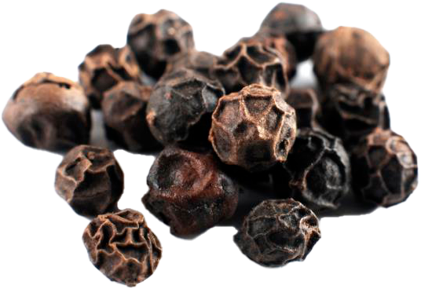
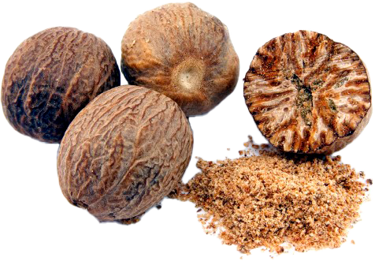

Любое блюдо или напиток можно сделать намного вкуснее и интереснее, если добавить разные специи!
Корица придает кофе особый, сладкий аромат и вкус. Его можно добавлять как во время приготовления, так и в готовый напиток. Специя обладает согревающим и противовоспалительным действием, поэтому является полезной добавкой при лечении простудных заболеваний.

Кардамон он благотворно влияет на работу сердца и желудка, обладает успокаивающими свойствами, а также является нейтрализатором кофеина. Пряность довольно пахучая, придает напитку остроту. Чтобы добавить кардамон в кофе, его измельчают, небольшое количество насыпают в турку, чтобы напиток не потерял свой натуральный аромат.

Черынй перец -Жгучая приправа прекрасно дополняет ароматный напиток. Двух горошин достаточно, чтобы очистить организм от накопившихся вредных веществ, прибавить сил, помочь при лечении респираторных заболеваний. Любители кофе с черным перцем - люди с сильным характером и тонким вкусом.

Ванилин -Сладкий аромат ванили делает кофе вкусным и нежным. Для приготовления напитка подходит как измельченная в порошок добавка, так и в виде стручка. Кофе с ванилью поднимает настроение, успокаивает нервы, успешно борется с нарушениями сна.
Имбирь -Хотя имбирный порошок считается острой приправой, но в кофе его вкус едва уловим. Имбирь повышает иммунитет и способен очень быстро поднять настроение, снять усталость. Это также оказывает влияние на кровообращение в организме.

Гвоздика-Гвоздика обладает специфическим ароматом, поэтому кофе с этой пряностью предпочитают настоящие гурманы. Вкус приправы горьковатый, поэтому при приготовлении следует соблюдать пропорции. Кофе с гвоздикой будет полезен людям, занимающимся умственной деятельностью, так как он прекрасно стимулирует работу мозга. Гвоздика улучшает пищеварительные процессы и защищает от простудных заболеваний зимой.

Мускатный орех-Небольшая щепотка специй, посыпанная поверх кофейной пены или добавленная во время приготовления, придаст напитку терпкий, вяжущий вкус. Мускатный орех полезен для мужского здоровья, работы сердца, мозговой деятельности. Этот кофе прекрасно тонизирует весь организм.

Бадьян-Ароматные звездочки не только украсят напиток, но и наполнят его эфирными маслами. Хорошо известным свойством бадьяна является способность устранять проблемы с заболеваниями горла, восстанавливать утраченный голос, смягчать кашель. Кофе со звездчатым анисом можно приравнять к лекарству, созданному самой природой. Пряность также полезна для нервной системы и работы желудка.

Лавровый лист-Хорошо знакомый запах и вкус лаврового листа чудесно сочетается с ароматом кофе. Этот напиток готовят для избавления от головных болей, высокого кровяного давления и депрессивных состояний.

Кориандр так называются семена кинзы, которые, наряду с травянистой частью растения, обладают стойким ароматом и набором полезных свойств. В кофе специи чаще всего добавляют для решения проблем с пищеварением, а также обладают легким привкусом слабительный эффект. Кориандр богат витаминами и микроэлементами.

Тмин-Напиток с тмином получается очень острым, так как пряность обладает ярким вкусом. Этот кофе придется по вкусу любителям новых ощущений. Тмин повышает аппетит и провоцирует обильное выделение желудочного сока. Он противопоказан людям , страдающим гастритом. Кофе с тмином прекрасно успокаивает нервную систему, обладает противовоспалительными свойствами, освежает дыхание.